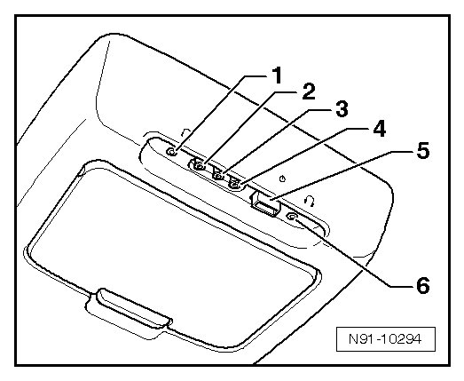

Auxiliary Device Connection Sockets
Auxiliary Device Connection Sockets
The multimedia system is equipped with various sockets for connecting additional devices. They can be video and audio devices or game consoles, for more information ,refer to--> Owner's Manual.

1. Stereo headphone connection (can be switched on and off with AUDIO-OUT button)
2. Red cinch socket, right audio signal input
3. White cinch socket, left audio signal input
4. Yellow cinch socket, picture signal input (video)
5. "DRIVER OFF" button, the multimedia system can be switched off by the driver or passenger using this button
6. Stereo headphone connection (can be switched on and off with AUDIO-OUT button)